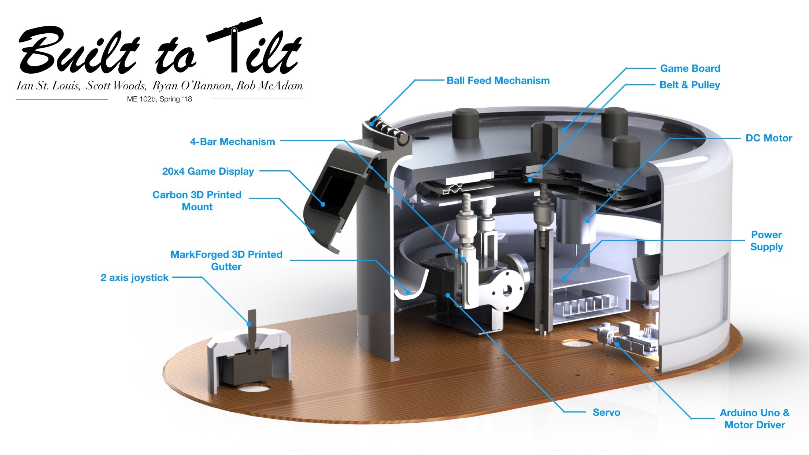

January - May 2018

Built to Tilt is an exciting arcade-style game I designed and built for my capstone engineering project class, ME 102B. The goal is simple: using the joystick, tilt the gameboard to direct a marble into the goal hole on the gameboard. Gamers must prevent the ball from rolling off the table into the gutter, and contend with a game board that spins faster as levels progress. The game is beautifully designed, immersive and addicting! How many rounds will you last?
My team and I emphasized professional-looking and elegant design for this project to stand out from typical hacked together engineering projects. From the clean enclosure and ball dispenser to the user promts on the LCD screen, fluid tilting movement, sound mechanical components and neat wiring, every component the user interacts with directly and indirectly is polished and well-executed. I hope everyone who plays is as impressed--and determined to play just one more round--as I am.
Check out the full project website for more details and pictures!